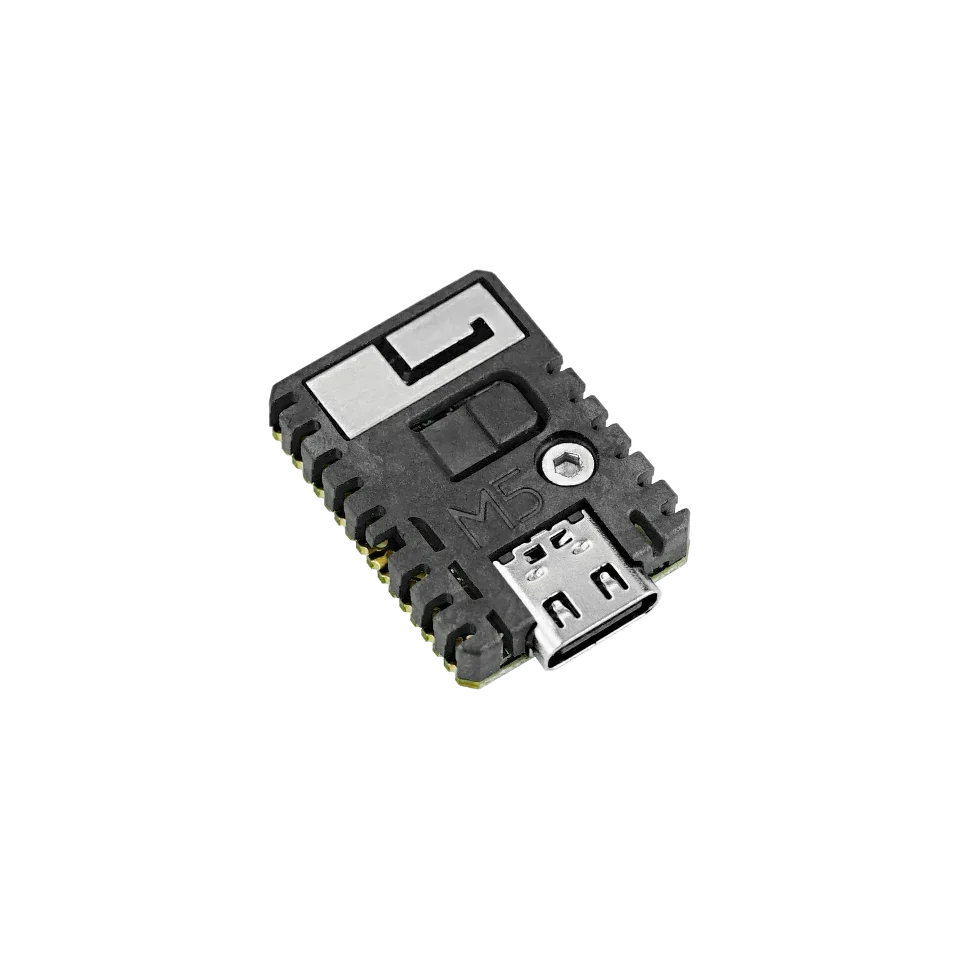

embedded fixture target
M5Stack StampS3: ESP32-S3 pinout, firmware and embedded fixtures
Use the M5Stack StampS3 when the Bit Pirate target needs to fit into a compact fixture or custom carrier. It works well for embedded fixtures, exposed-pin tests and projects where the Bit Pirate target must stay tiny.

Board-specific guide for M5Stack StampS3 firmware, compact fixtures, exposed pins and ESP32-S3 debugging workflows.
compatibility
StampS3 board overview
Use this page to judge StampS3 for embedded fixtures, carrier boards and compact ESP32 Bit Pirate wiring.
practical tasks
StampS3 supported workflows
StampS3 fits embedded fixtures and carrier-board workflows where UART, I2C, SPI or GPIO access is planned into the hardware.
Build a small UART or AT-console fixture around the module.
Use the carrier or breakout to route bus pins deliberately.
Pulse, listen and measure through the pins exposed by the carrier or harness.
Use Bit Pirate commands in a repeatable hardware harness.
StampS3 pin mapping and wiring notes
Pin availability depends heavily on the carrier or breakout. The wiki lists exposed StampS3 pins as GPIO1/GPIO3/GPIO5/GPIO7/GPIO9/GPIO13/GPIO15/GPIO43/GPIO44; confirm the exact carrier wiring and do not assume a generic ESP32-S3 header layout.
Always verify voltage and pin mapping before connecting a target. The ESP32-S3 side is not 5 V tolerant unless external level shifting or the Dock path is used correctly.
useful pages
StampS3 useful next pages
Jump from StampS3 to fixture-friendly protocol pages, recipes and hardware references.
Protocol modes
Useful recipes
Use the task guide for wiring, commands and troubleshooting.
Bridge UART consoleUse the task guide for wiring, commands and troubleshooting.
Scan unknown I2C deviceUse the task guide for wiring, commands and troubleshooting.
Read SPI flash JEDEC IDUse the task guide for wiring, commands and troubleshooting.
Tools and hardware
Open Web Serial for StampS3 CLI sessions after flashing.
Web FlasherFlash the matching StampS3 build from a compatible browser.
Hardware ecosystemCheck docks, adapters and wiring hardware that pair with StampS3.
Modules and target chipsBrowse chips and breakout modules that make sense with StampS3 wiring.
board-specific answers
StampS3 FAQ
Quick StampS3 answers about fixture use, carrier wiring, firmware support and practical GPIO access.
Is StampS3 a good first board?
It can be, but ESP32-S3 DevKit is easier if you want labeled headers, Dock wiring or many simultaneous target signals.
Why use StampS3 with ESP32 Bit Pirate?
Use it when the debugging tool must be tiny or embedded into another fixture.
Can StampS3 be embedded into a custom fixture?
Yes. StampS3 is useful inside compact test fixtures; expose power, UART and target pins on the carrier, and keep boot/reset access and safe logic levels available.
Can it use browser tools?
Yes, once flashed and connected through a compatible USB serial path.
Is it good for Dock use?
The Dock is centered on DevKit-style boards, so StampS3 is more of an integration target than the reference Dock target.

source project
StampS3 in the ESP32 Bit Pirate ecosystem
ESP32 Bit Pirate on StampS3 is aimed at embedded fixtures, compact carriers and wiring jobs where the module becomes part of the test setup.